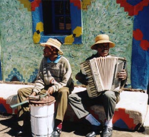
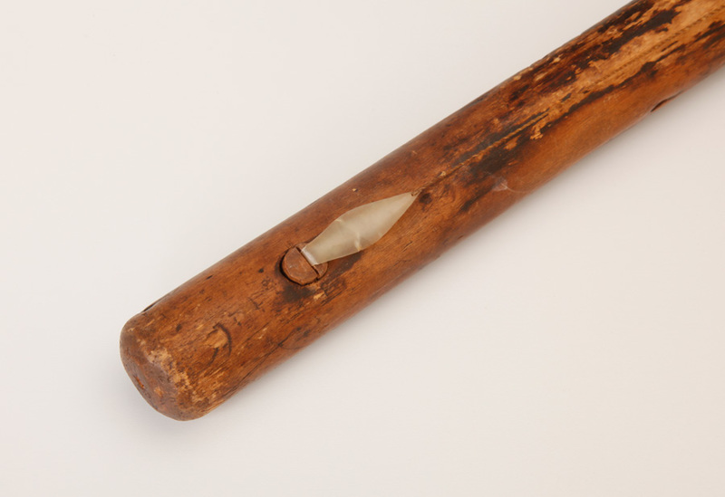
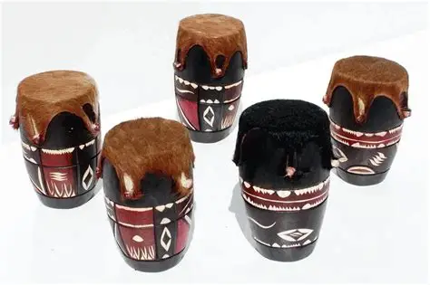
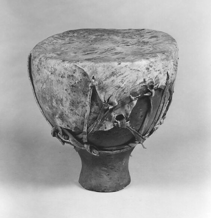
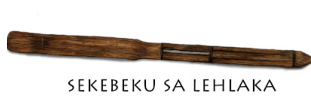

🎶 Now playing: "lengae_kea patlotsa" by Phephela
Mamokhorong
Moropa and Koriana
Lesiba
Moropa
Sekupu
Sekebeku
1. Mokhibo – A women’s dance performed on knees, symbolizing grace and storytelling
2. Mohobelo – A men’s energetic dance associated with warrior culture and strength
3. Mokorotlo – Dance mimicking daily activities and agricultural practices, named after the Basotho traditional hat
4. Sefela – Celebration dance performed on special occasions, symbolizing joy and community
5. Tholoana – Lively and fast-paced dance for festive events, emphasizing unity
6. Bolo Sela – Dance performed during weddings and celebrations, showing joy and community participation
7. Setolotolo – Graceful women’s dance often performed at weddings to celebrate fertility
8. Seana Marena – Dance honoring King Moshoeshoe I, representing resilience and solidarity
9. Litema – Primarily a women’s dance with intricate footwork and hand gestures representing culture and storytelling
10. Tsilo – Circular formation dance symbolizing unity and love within the community
11. Litolobonya – Performed by young women, expressing femininity, strength, and rite of passage
12. Maqekha – Associated with female initiation rites
13. Lebollo – Initiation dance for boys or girls marking transition to adulthood
14. Khotso – Traditional men’s dance symbolizing power and community cohesion
15. Likhobong – Energetic, rhythmic dance with challenging choreography
16. Lekhotla – Communal gathering dance for celebrations
17. Sebete – Dance mimicking hunting techniques
18. Thuso-Pula – Dance signaling harvest or rain celebrations
19. Moqhaka – Women’s dance performed during marriage or ceremonial events
20. Phomolo – Rest or relaxation dance often incorporated in festivals
21. Lekoko – Performed with traditional drum accompaniment, often at girls’ initiation ceremonies
22. Moropa – Drum-based dance with synchronized movements
23. Selete – Elegant circular dance fostering community interaction
24. Khonkhoma – Ceremonial dance using symbolic gestures, often for gratitude rituals
25. Mokhakha – Youth dance performed in competitive displays
27. Pula-thoho – Dance celebrating rain and agricultural bounty
28. Mokhosa – Bridal dance performed during wedding rituals
29. Letlotlo – Wealth and prosperity dance performed at festivals
30. Molimo Dance – Spiritual dance connecting to ancestors and seasonal rituals
31. Koena Dance – Dance emphasizing bravery and traditional war customs
32. Lerato – Dance expressing love and courtship themes
33. Sebayeng – Traditional dance performed with singing and clapping to narrate history
34. Setsakana – Energetic performance often used in national celebrations
35. Mokhono – Group performance dance celebrating togetherness and cultural pride